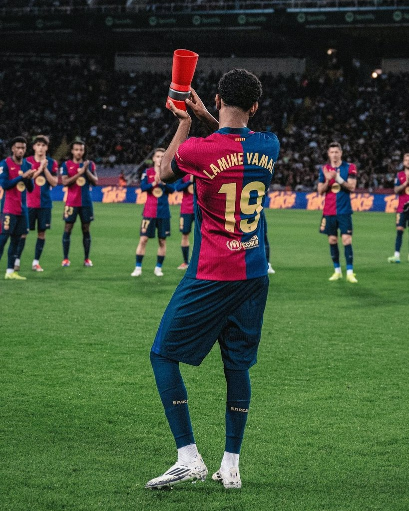

Lamine Yamal Nasraoui Ebana (born 13 July 2007) is a Spanish professional footballer who plays as a right winger for La Liga club Barcelona and the Spain national team. Known for his pace, dribbling, passing, crossing ability, and ability to strike powerful long-range shots, he is widely regarded as one of the best young footballers in the world